Model tab: view and check
Look at a model like in ModView - surfaces, tags, bones, LODs, skins, attached sabers, primary and secondary animation - drawn the way the game draws it, and check it against the limits of Jedi Academy, Jedi Outcast and Movie Duels. Mouse and keys work like 3ds Max.

Open a model as before (NPCs, .glm, .pk3). The tab starts in View/Check; the other areas (Modeling, UV, Weights, Painting, Animation) come in the next stages of the model block - their views, explorer and timeline already work. The model is loaded into its own document with every level of detail; drawing an unchanged model gives exactly the same picture as before (checked with every model under models/players of Jedi Academy, Jedi Outcast and Movie Duels).
Scene explorer#
The Scene Explorer shows the surfaces (By hierarchy or By layers), the tags and the bones of the skeleton; Search (H) filters by name. Grey surfaces are not drawn. A right-click works like in ModView and like the game (G2_SetSurfaceOnOff, G2_SetRootSurface): Off hides the surface but keeps its children, Off, no descendants hides the whole branch, Set as root surface draws only this branch, Original state undoes it all. A skin line name,*off switches a surface off the same way. Bones with an orange dot are looked up by the game code.

Right-click a tag (for example *r_hand) or a bone and choose Attach model to attach a model from the game archives - a saber, a weapon, a head - like G2API_AttachG2Model: on a tag it follows the tag triangle, on a bone the bone. The rollout Attachments lists them and detaches them again.
One tree for everything: at the top the model, below it Surfaces with their hierarchy, Tags with the models attached to them, Bones, the handles of the control rig and the sequences of the animation.cfg - the same tree in every area of the tab. A click on a sequence plays it as the primary sequence (lock with P), a right-click locks it as the secondary one (S); a red warning sign marks sequences whose frames lie behind the end of the GLA. The list under the node shows only one group (BOTH_, TORSO_, LEGS_, FACE_), the two buttons next to it copy the name and open Into script (also: double-click). Search (H) filters all rows by name.
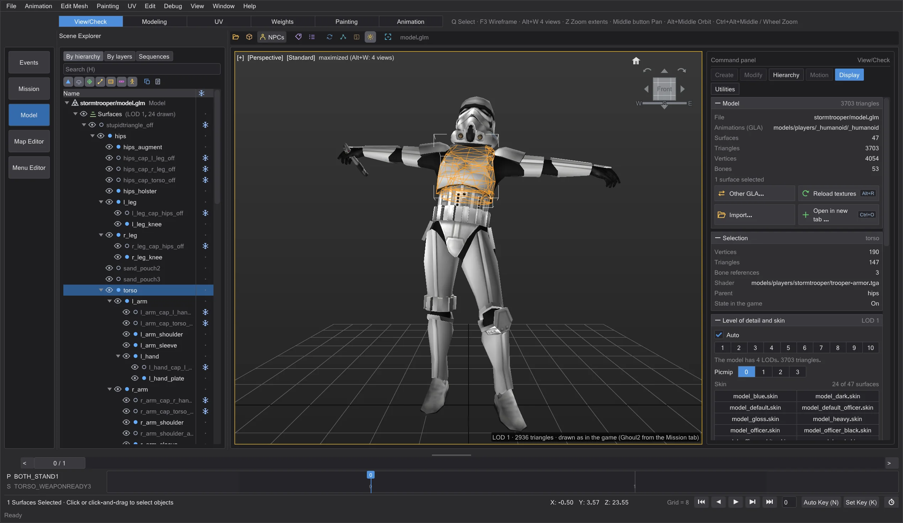
The row follows the control mode. like 3ds Max (scene explorer): the arrow that folds, the eye and the symbol stand directly in front of the name, each level is indented by one symbol; the column Frozen (snowflake) freezes. The column headings can be dragged in width, and a click on Name sorts ascending, descending and back to the order of the hierarchy. The row of symbols under the search shows or hides kinds of rows (surfaces, caps, tags, bones, sequences, attached models, rig handles; Ctrl+click: only this kind). like Blender (outliner, switch Hierarchy / Collections): the tree on the left, the eye and the arrow "selectable" in fixed columns on the right, the kinds in the Filter popover next to the search (with Bones as a flat list and Sort alphabetically). The tree never scrolls sideways: deep bones move closer together, and a name that does not fit ends with "..." and stands in full in the tooltip, together with the info of the row (vertices, triangles, shader, parent, state in the game - also as Info in the right-click menu). Shift+click selects all surfaces from the last clicked one to this one. In front of a surface: a dot = on, a ring = off, a struck ring = off with its children, an anchor behind the name = root surface.
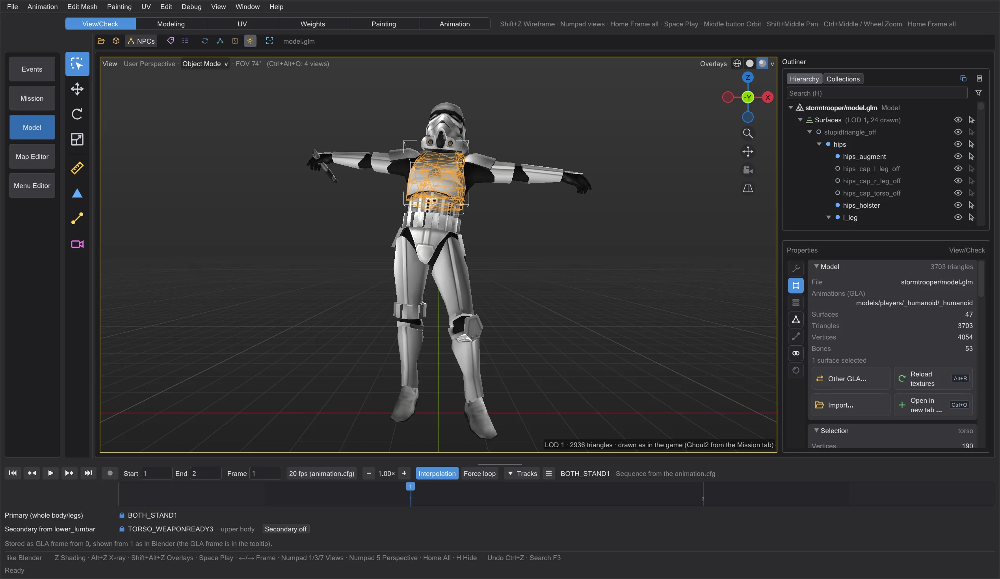
By layers (like Blender: Collections) sorts the same rows into layers: Body, Caps (_off), Tags, Bones, Attachments and the further levels of detail (LOD 2, LOD 3 ...). The eye of a layer hides all its rows in the view only - the game stays as it is; what the game draws is still switched with on/off of the surfaces. The snowflake (like Blender: the arrow) freezes: frozen rows stay visible, but a click in the tree or in the view does not select them, the selection frame passes them by, and the status line says why. The caps are frozen from the start, so a click on the figure never picks a cap. The eye of a LOD layer shows that level of detail. Every single row has the same two switches; Ctrl+click on an eye shows only this row, Shift+click on the snowflake takes the children along.
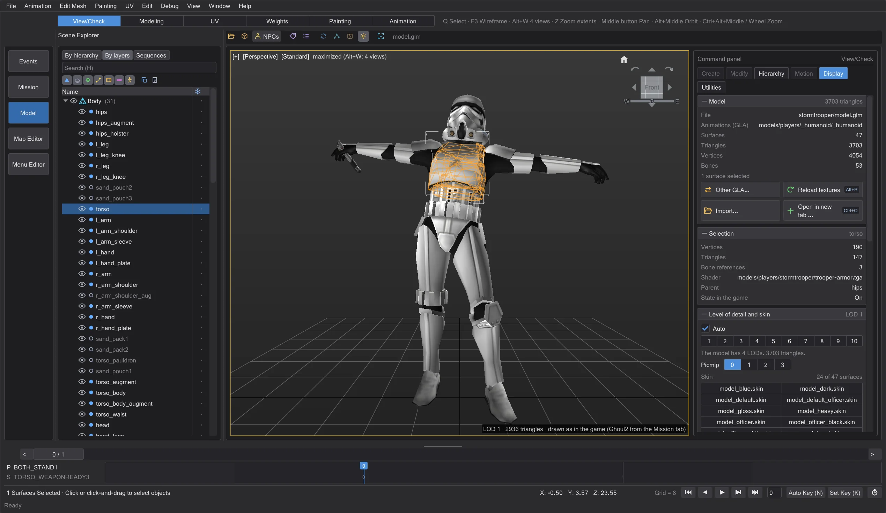
Command panel#
Model: file, skeleton, numbers, Other GLA (GLA override from the archives), Reload textures (Alt+R) and Photo (the active view, at least 1920 pixels wide). Level of detail and skin: LOD 1-10 or Auto - as in the game the distance picks the level (single player: radius 40, r_lodscale 10; multiplayer: radius 64, r_lodscale 5); picmip and the skins. The display options are in the header of the view (see below).
Click a sequence under Sequences in the scene explorer to play it as Primary (whole body). Right-click another one and choose Secondary from to play it on the upper body from lower_lumbar up, like SET_ANIM_UPPER in the game (another start bone: right-click a bone). Interpolation blends between two frames like the game. The timeline counts frames from 0 like 3ds Max and the animation.cfg.
View header, ViewCube and gizmo#
Every view has its header at the top left, like the viewport label menus of 3ds Max - each field lights up under the mouse and opens its menu with a left or right click. [+]: Maximize viewport (Alt+W), Zoom extents (Z), what the view shows (grid G, floor, origin, bounding box, selection bracket J, statistics 7, height ruler, plain background), the submenu Bones and checks (bones, fins, normals, tags, crack finder, vertex and triangle numbers), ViewCube and the field of view. [Perspective]: the point of view with the keys of 3ds Max (P, U, T, B, F, L) and Home (figure from the front). [Standard]: the shading of this view - wireframe (F3), edged faces (F4), two-sided, white textures, vertex weights, silhouette. In the four views every view keeps its own shading, grid and statistics. The same menus are in the right-click menu of the view, and Search all actions (X) (X) finds every switch; its tooltip says where it is. Switches that need a selected surface (numbers, crack finder) say so in the view until you select one.
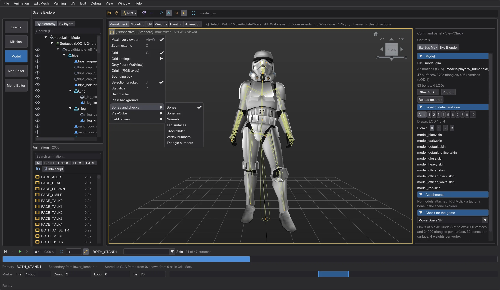
The ViewCube at the top right of the active view shows where you look from and behaves like the one of 3ds Max. It has 26 targets - 6 faces, 12 edges, 8 corners; the one under the mouse lights up, and a click turns the view there in a short animation. The projection stays: a perspective view stays perspective; in an orthographic view a face gives its view (Front, Top ...), an edge or corner the free Orthographic view. Dragging the cube orbits. The compass ring below it carries N, E, S and W: drag the ring to turn about the vertical axis only, click a letter to look from there. Looking straight at a face, four arrows lead to the neighbouring faces and two curved arrows roll the view by 90 degrees. The house at the top left is Home: the camera flies to the figure from the front, centred. A right click offers Home, Set current view as Home and Orthographic. The cube is half transparent until the mouse is over it. A figure looks along -Y in its .glm (the game turns it to +X), so Front shows its face - also after loading a figure, after Alt+W and with reset view; as in 3ds Max north lies behind the Front face. [+] > ViewCube switches the cube or the compass off, shows the cube in all four views and sets the Angle of north.
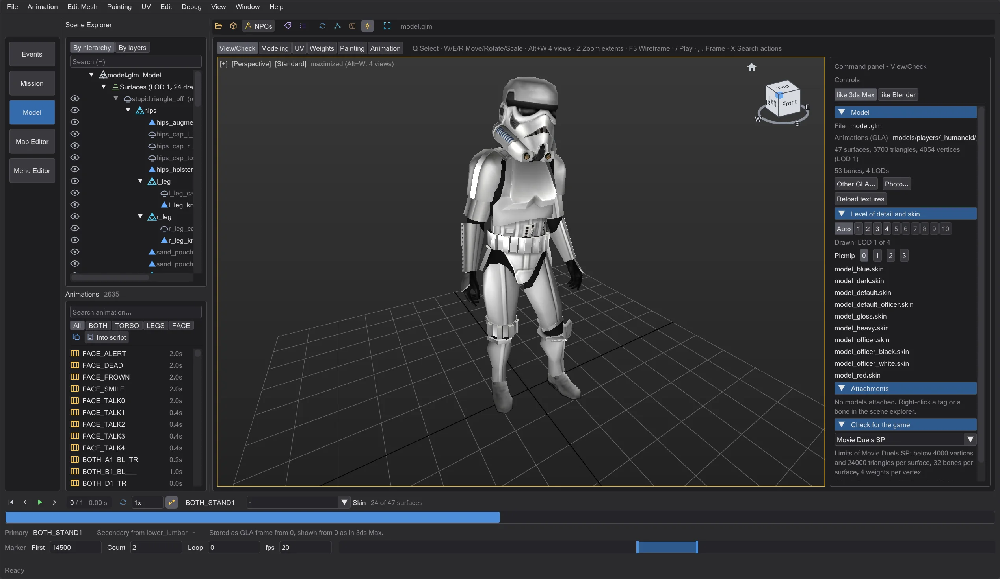
In Blender mode the header is laid out like Blender's 3D view: on the left the menu View (Frame Selected, Frame All, Perspective/Orthographic, Viewpoint with the numpad keys, Navigation with orbit, roll and the opposite side, Toggle Quad View), on the right Overlays and the three buttons of Viewport Shading - Wireframe, Solid, Material Preview - with the drop-down for backface culling and the silhouette. Below them is the navigation gizmo: a click on an axis looks along it, a second click looks from the opposite side, dragging orbits (an axis view turns into the perspective, like Blender's Auto Perspective); below it zoom, move and perspective/orthographic. The numpad works as in Blender: 4/6/8/2 orbit by 15 degrees, Shift+4/6 roll, 9 the opposite side, Ctrl+1/3/7 back, left and bottom, Shift+Z wireframe, Ctrl+` the gizmo.
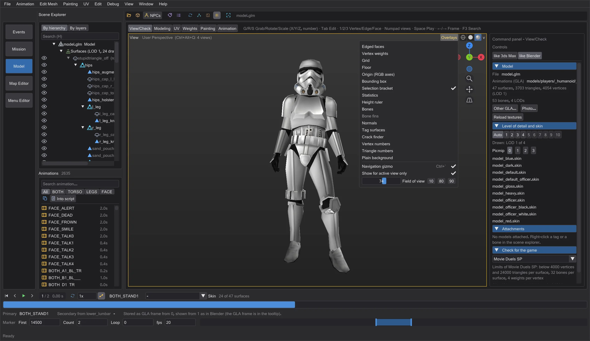
The ViewCube is derived from WhiteoutDex (max_viewcube.h, BSD 3-Clause licence, Copyright (c) 2026 WhiteoutDex Contributors) and WhiteoutFlakes (BSD 3-Clause licence with AI-derived works notice, Copyright (c) 2026 Fernando Sahmkow); the navigation gizmo is drawn by JK Studio itself - no graphics of Autodesk or Blender.
Floor grid#
Every view shows a grid from the start, like the home grid of 3ds Max: thin lines at the grid spacing, darker major lines and the world axes in black. In the perspective view it lies on the floor and ends after 7 lines (Max: Perspective View Grid Extent); in the views Top, Front, Left ... it lies in the view plane, fills the whole view and grows with the zoom - zoomed out, the major lines become the new lines; zoomed in it never gets finer than the spacing, as in Max. The figure hides the grid. [+] > Grid (G) switches it for this view. [+] > Grid settings sets Grid spacing (8 JKA units, like the grid of the map editor), Major lines every Nth grid line (8: a major line every 64 units - the height of a player), Perspective view grid extent and the Floor height: by default -24, the feet of a JKA figure. 3ds Max and Blender put their grid at Z = 0, but a JKA figure has its origin at the hips. Lowest point puts the floor under the lowest point of the figure in its pose (props with their origin on the floor: 0). Spacing and major lines are also in the settings (Model tab: grid). The grey floor of ModView (Grey floor (ModView)) stays a switch of its own and can be shown together with the grid.
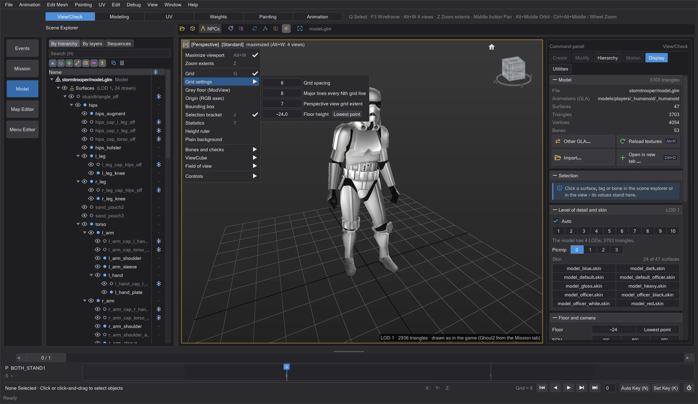
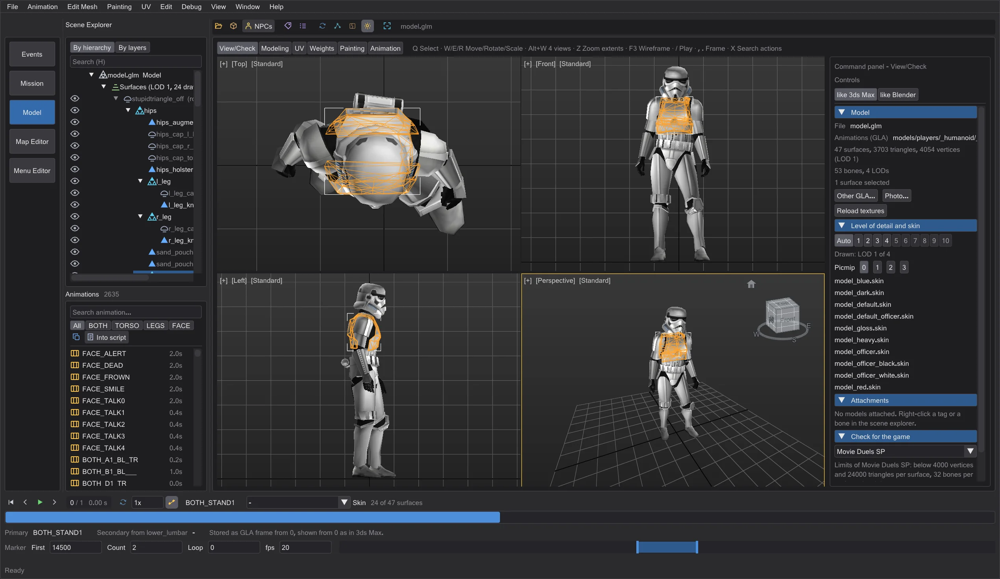
In Blender mode the grid looks and behaves like Blender's overlays: the floor fades out towards the horizon and seems endless, the X axis is red and the Y axis green (Z blue when you switch it on); in the side views the subdivisions change with the zoom. Overlays > Guides has Grid (the side views), Floor (perspective), Axes X Y Z, Scale and Subdivisions - each view keeps its own switches; scale and subdivisions are the spacing and the major lines from above.
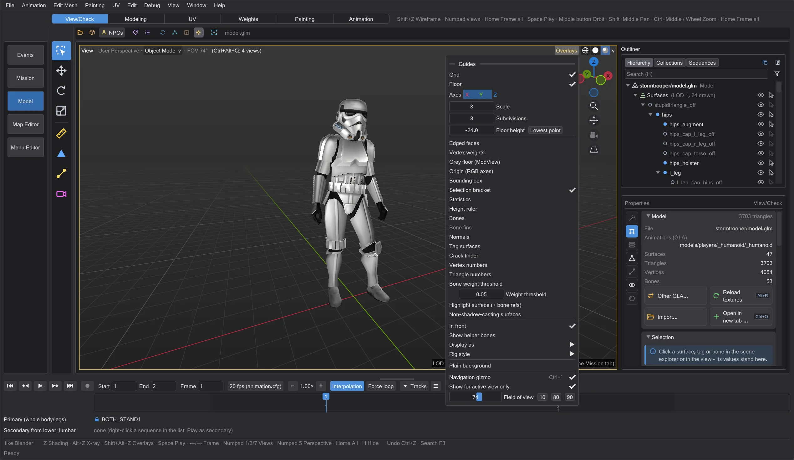
Navigating the views#
Mouse and keys move a view exactly as in the program whose mode is set (Settings > Model tab > Controls): like 3ds Max or like Blender. The line above the views names the most important ones, every command is also in the menu of the view header ([View name] > Navigation, in Blender mode View > Navigation), in the right-click menu and in the search (X / F3). Panning moves the scene exactly with the mouse, zooming and orbiting keep the point in the middle of the view.
Like 3ds Max
| Mouse / key | What it does |
|---|---|
| middle mouse button | Pan: the view follows the mouse. With Shift only along the direction you move first. |
| Alt+middle mouse button | Orbit about the point chosen under Navigation > Orbit around (from the start the selection, without one the centre of the view). A view Top, Front, Left ... becomes the free view Orthographic. With Shift only about the axis you use first. |
| Ctrl+Alt+middle mouse button | Zoom: up closer, down further away. |
| mouse wheel, [ ], Ctrl+= Ctrl+- | Zoom in steps about the point under the mouse (Zoom about mouse point (orthographic) / Zoom about mouse point (perspective); off: about the centre of the view). |
| Z, Ctrl+Alt+Z | Zoom extents: Z fits the selection (without one the whole figure) into all views, Ctrl+Alt+Z the whole figure into the active view. Zoom extents all (all views, whole figure) is in the menu - its key in 3ds Max, Ctrl+Shift+Z, is Redo here. |
| Ctrl+Alt+Shift+Z, Alt+Shift+Z | Twice as close / twice as far. |
| Alt+Z, Ctrl+P, Ctrl+R, Ctrl+W | Navigation modes like the buttons at the bottom right of 3ds Max - Zoom, Pan, Orbit, Zoom Region: drag with the left button, the name of the mode stands at the bottom of the view; right-click or Esc ends it. Orbit shows the yellow circle: inside it the view turns freely, on one of the four handles about one axis only, outside it rolls. Zoom Region: the rectangle you drag fills the view afterwards. |
| I | Pan to the pointer: the point under the mouse comes into the middle of the view. |
| Shift+Z, Shift+Y | Undo / redo the last view change of the active view (pan, zoom, turn, ViewCube) - a history of its own for each view, independent of Ctrl+Z. |
| T B F L P U, V | Views Top, Bottom, Front, Left, Perspective, Orthographic; V opens the menu of all views at the mouse pointer. |
| Alt+W, Alt+Home, Ctrl+Alt+V | One view or four; Home view (the ViewCube's Home); show or hide the ViewCube. |
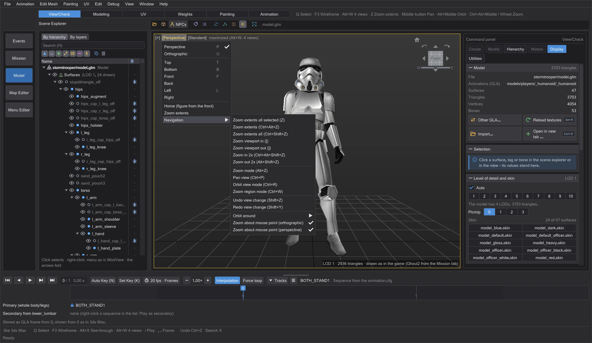
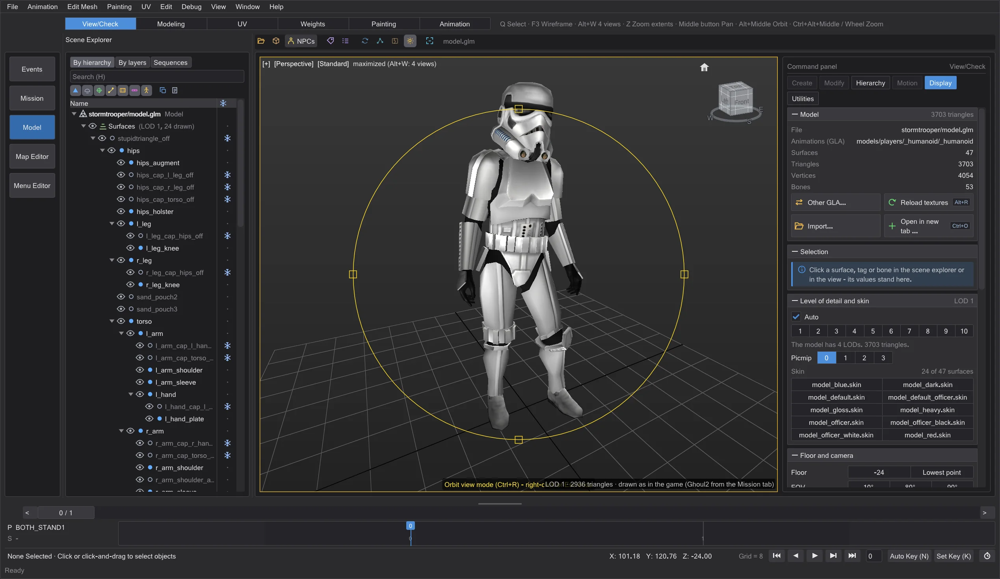
Like Blender
| Mouse / key | What it does |
|---|---|
| middle mouse button | Orbit (turntable): left and right about the vertical axis, up and down over the figure - also over the top. A view Front, Right, Top ... becomes the perspective (Auto Perspective). Hold Alt while dragging to snap to the views along the axes and diagonals. |
| Shift+middle mouse button | Pan: the view follows the mouse. |
| Ctrl+middle mouse button | Zoom by dragging up and down (Blender's Dolly zoom). |
| mouse wheel, Numpad + Numpad -, Ctrl+= Ctrl+- | Zoom in steps: one step divides or multiplies the distance by 1.2, about the centre of the view (Zoom to Mouse Position on: towards the mouse). |
| Alt+middle mouse button | Dragging turns the view a quarter turn on to the neighbouring axis view (right, left, up, down); a click puts the point of the figure under the mouse into the middle of the view. |
| Numpad 1 Numpad 3 Numpad 7, Numpad 5, Numpad 9 | Front, Right, Top (with Ctrl the opposite side), orthographic and turned smoothly; Numpad 5 switches between perspective and orthographic in the same direction; Numpad 9 the opposite side. |
| Numpad 4 Numpad 6 Numpad 8 Numpad 2 | Orbit in steps of 15 degrees (4 and 6: the camera goes left and right, 8 and 2: up and down); with Shift 4 and 6 roll the view, with Ctrl the four keys pan it. |
| Numpad ., Home, Shift+C | Frame Selected (nothing selected: nothing happens), Frame All, and Frame All including the origin. The direction stays. |
| `, Shift+B, Ctrl+Alt+Q | The View pie menu at the mouse pointer (Left, Right, Bottom, Top, Front, Back, View Selected); Zoom Region - drag a rectangle that then fills the view; the quad view with Top, the perspective, Front and Right. |
| Gizmo | The gizmo at the top right: click an axis for its view (looking straight along an axis, the middle gives the opposite side), drag it to orbit; the buttons below zoom and pan by dragging and switch between perspective and orthographic. |
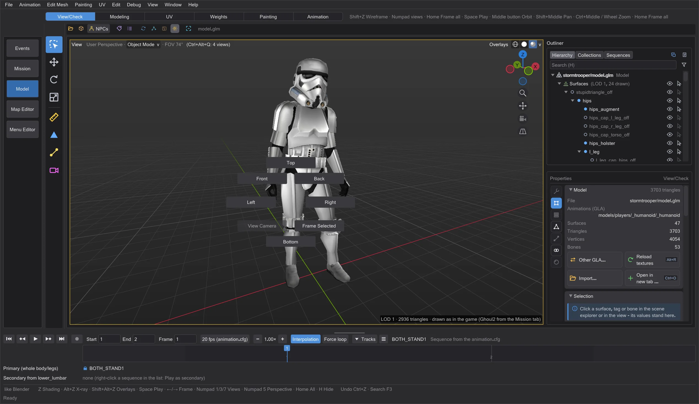
Navigation also holds the settings: like 3ds Max Orbit around (View centre (Orbit), Selection (Orbit Selected), Sub-object selection (Orbit SubObject), Point under the mouse (Orbit Point of Interest)) and the two switches Zoom about mouse point (orthographic) / Zoom about mouse point (perspective); like Blender Orbit Around Selection and Zoom to Mouse Position (both off from the start, as in Blender). Not built: the SteeringWheels and the walkthrough mode of 3ds Max, Walk/Fly navigation and the trackball orbit of Blender, camera views.
Check for the game#
Check for the game checks the model against the target game: vertices and triangles per surface (Jedi Academy and Jedi Outcast stop with an error at 1000 vertices, Movie Duels at 4000), 32 bones per surface, 4 weights per vertex, the Ghoul2 instances (MAX_G2_MODELS), every line of the animation.cfg against the frames of the GLA (behind the end the figure stands in T-pose in OpenJK-based games, the original keeps it standing) and surfaces without a texture or shader.
Controls like 3ds Max#
Controls like 3ds Max is the default; the key map like Blender comes in stage 1a-2. The keys work after a click into the view, the explorer, the command panel or the timeline; X lists them all. The gizmo moves, rotates or scales the selected surfaces in the model document (all levels of detail) - Ctrl+Z takes it back.
| Middle mouse / Alt + middle / wheel | Pan / orbit / zoom (Ctrl + Alt + middle: zoom by dragging) |
| Left click / drag | Select a surface / select with a frame (Ctrl adds, Alt removes) |
| Q / W / E / R | Select, move, rotate, scale (F5 / F6 / F7 restrict to X / Y / Z, F8 planes, + / - gizmo size) |
| Alt+W / P T F L B / Z | Four views or one / perspective, top, front, left, bottom / zoom extents (selection) |
| F3 / F4 / G / J / 7 | Wireframe, edged faces, grid, selection bracket, statistics |
| / , . Home End | Play/stop, one frame back/forward, first/last frame |
| Ctrl+A / Ctrl+D / Ctrl+I / H | Select all, none, invert; select by name |